Gaussian Process (GP) lab Demo
Griffin Pugh & Harrison York
2025-10-09
click here for the R code.
Read Me :)
Information and introductory figures were acquired from: https://distill.pub/2019/visual-exploration-gaussian-processes/ Highly recommend reading over this guide and play around with interactive figures.
What is Gaussian Process?
A Gaussian Process (GP) is a probabilistic machine learning method that uses prior knowledge to make predictions and quantify uncertainty. A linear model in a Bayesian framework will create a posterior distribution across the set of infinite possible linear functions, while the GP will fit an infinite number of differing non-linear functions (flexible). GP models an unknown function that best fits a set of data points (regression), not as a single fixed line, but as a distribution over infinitely many possible functions that could explain the data. The GP assigns a probability to each potential function, and the mean of this distribution represents the most probable function. This approach not only provides a prediction but also a confidence measure for each estimate.
Gaussian Process No Points

Gaussian Process 2 Points

Gaussian Process 3 Points

Gaussian Process All Points

This is essentially what a Gaussian Process does. It explores and estimates the best fitting function for the provided data (points) while incorporating uncertainty (confidence intervals).
How does the Gaussian Proceess (GP) work?
The Gaussian distribution (often referred to as the normal distribution) is the basic building block of Gaussian processes. At its simplest, the Gaussian distribution describes a single random variable using a mean (μ) and a variance (σ²). A multivariate Gaussian distribution generalizes this idea to multiple random variables, each of which is normally distributed, and together they have a joint Gaussian distribution. This distribution is fully described by:
A mean vector (μ) - gives the expected value for each variable (or point in the function).
A covariance matrix (Σ) — defines how the variables vary together.
Random Variables Following a Gaussian Distribution Equation

The equation for having each random variables follow a Gaussian distribution. We say X follows a normal distribution. μ describes the mean of the distribution. The covariance matrix Σ describes the shape of the distribution.
Below are some examples of how the covariance matrix looks and how the values change with differing levels of covariance and variance. The variances for each random variable are on the diagonal of the covariance matrix (var), while the other values show the covariance between them (cov).
Covariance Matrix Math and Position

Covariance Matrix No Correlation with Little Variance

You can think of this as a point cloud for two variables along a y and x axis. The yellow points with bars are handles for adjusting the covariance matrix.
Covariance Matrix with Positive Correlation with some variance

Covariance Matrix with Positive Correlation with a lot of variance

Covariance Matrix with Negative Correlation with some variance

Increasing variance for x will cause horizontal expansion while increasing variance for y will cause vertical expansion. The correlation between x and y is what determines the trend of the data cloud (covariance matrix). No correlation will result in no trend (circle) or a trend in a single axis (horizontal/vertical flat line).
Marginalization and conditioning
Marginalization and conditioning are two fundamental operations that make Gaussian Processes (GPs) both mathematically elegant and practically powerful.
Marginalization allows us to focus on a subset of variables from a multivariate Gaussian distribution by integrating out the others. In simple terms, we can ignore parts of the distribution that aren’t of current interest while still preserving a valid Gaussian form.
Conditioning, on the other hand, lets us update our understanding of one variable given information about another. After observing the normal distribution of the marginalized data we can update our understanding for the next set of marginalized data.
In the context of Gaussian Processes, conditioning (training) is what enables learning: once we observe data points, the GP conditions on these observations to update its mean and covariance functions, yielding predictions for new points along with their associated uncertainty.
Kernels
To define a Gaussian Process (GP), we must specify its mean function μ and covariance function Σ. In most GP applications, we assume μ=0 for simplicity.
The more interesting component is the covariance matrix Σ, which determines the shape and smoothness of the functions drawn from the GP. This matrix is constructed by evaluating a kernel function (also called the covariance function) on every pair of input points. The kernel measures the similarity between points and its entries describe how strongly the corresponding function values are correlated. The choice of kernel therefore defines the class of functions the GP can represent.
Common kernels include:
- Radial Basis Function (RBF): produces a smooth stationary spline function.
RBF Kernel Visual

- Periodic Kernel: generating repeating patterns with period p.
Periodic Kernel Visual

- Linear Kernel: allowing functions with global linear trends.
Linear Kernel Visual

A big benefit that kernels provide is that they can be combined together, resulting in a more specialized kernel. The decision which kernel to use is highly dependent on prior knowledge about the data, e.g. if certain characteristics are expected. Examples for this would be stationary nature, or global trends and patterns. For example, if we add a periodic and a linear kernel, the global trend of the linear kernel is incorporated into the combined kernel. The result is a periodic function that follows a linear trend (see figure below).
Linear + Periodic Kernel Visual

Prior Distribution
When no data have yet been observed, the GP defines a prior distribution over functions — a collection of possible smooth curves drawn according to the chosen kernel. Each kernel has a set of parameters to place priors on. For example the RBF kernel has a variance (deviation from mean) and length scale parameter (how correlation changes with distance between points). Choosing an appropriate kernel with associated priors is important and should considered carefully.
RBF kernel with low length scale prior

RBF kernel with high length scale prior

Posterior Distribution
Once we observe training data, the Gaussian Process updates its beliefs about what the underlying function might look like. This updated belief is called the posterior distribution. It represents our new understanding of the function after taking the observed data into account. To produce this it follows these steps:
We first combine the training points (the data we’ve seen) and the test points (the places where we want predictions) into one joint distribution.
The next step is to update our understanding by conditioning on the newly added points.
Add an error term for each of the points to allow more flexible and realistic outcomes.
By performing these steps in an iterative process produces the posterior distribution which we can use to make predictions. From this distribution, we can extract two important things for each test point: the mean and variance. Together, these give us both a prediction and a measure of confidence.
Benefits of Gaussian Process
- Non-parametric Flexibility
- GPs model functions, not parameters: Unlike linear or
polynomial regression, which assumes a specific functional form, GPs
define a distribution over functions.
- Benefit: They can naturally adapt to complex, non-linear relationships in the data without pre-specifying a fixed model.
- GPs model functions, not parameters: Unlike linear or
polynomial regression, which assumes a specific functional form, GPs
define a distribution over functions.
- Quantified Uncertainty
- Predictive distributions: For any input, a GP gives a mean prediction and a variance (uncertainty).
- Benefit: This allows you to know not only what the model predicts but also how confident it is.
- Bayesian Framework
- GPs are fully Bayesian: You can incorporate prior knowledge
about the function via the mean function or the kernel.
- Benefit: They naturally update beliefs as more data are observed, giving principled uncertainty estimates.
- GPs are fully Bayesian: You can incorporate prior knowledge
about the function via the mean function or the kernel.
- Kernel (Covariance) Flexibility
- Covariance function choice: You can encode smoothness, periodicity, trends, or other assumptions via the kernel
- Benefit: GPs can model a wide range of behaviors just by changing kernels or combining them.
- Small Data Efficiency
- Works well with limited data: Unlike deep learning, which
needs huge datasets, GPs can produce accurate predictions with
relatively small data sets.
- Benefit: Ideal when data collection is expensive or limited.
- Works well with limited data: Unlike deep learning, which
needs huge datasets, GPs can produce accurate predictions with
relatively small data sets.
- Interpretable Predictions
- Smooth functions with uncertainty: The predictions are
smooth and come with credible intervals.
- Benefit: This is easier to interpret than black-box models like deep neural networks.
- Smooth functions with uncertainty: The predictions are
smooth and come with credible intervals.
- Automatic Complexity Control
- Occam’s Razor built-in: The marginal likelihood
automatically balances model fit and complexity.
- Benefit: GPs avoid overfitting more naturally than many flexible parametric models.
- Occam’s Razor built-in: The marginal likelihood
automatically balances model fit and complexity.
Packages
library(rstan)## Loading required package: StanHeaders##
## rstan version 2.32.7 (Stan version 2.32.2)## For execution on a local, multicore CPU with excess RAM we recommend calling
## options(mc.cores = parallel::detectCores()).
## To avoid recompilation of unchanged Stan programs, we recommend calling
## rstan_options(auto_write = TRUE)
## For within-chain threading using `reduce_sum()` or `map_rect()` Stan functions,
## change `threads_per_chain` option:
## rstan_options(threads_per_chain = 1)## Do not specify '-march=native' in 'LOCAL_CPPFLAGS' or a Makevars filelibrary(cmdstanr)## This is cmdstanr version 0.9.0## - CmdStanR documentation and vignettes: mc-stan.org/cmdstanr## - CmdStan path: C:/Users/kshoemaker/.cmdstan/cmdstan-2.37.0## - CmdStan version: 2.37.0library(posterior)## This is posterior version 1.6.1##
## Attaching package: 'posterior'## The following objects are masked from 'package:rstan':
##
## ess_bulk, ess_tail## The following objects are masked from 'package:stats':
##
## mad, sd, var## The following objects are masked from 'package:base':
##
## %in%, matchlibrary(bayesplot)## This is bayesplot version 1.14.0## - Online documentation and vignettes at mc-stan.org/bayesplot## - bayesplot theme set to bayesplot::theme_default()## * Does _not_ affect other ggplot2 plots## * See ?bayesplot_theme_set for details on theme setting##
## Attaching package: 'bayesplot'## The following object is masked from 'package:posterior':
##
## rhatlibrary(ggplot2)## Warning: package 'ggplot2' was built under R version 4.5.2library(loo)## This is loo version 2.8.0## - Online documentation and vignettes at mc-stan.org/loo## - As of v2.0.0 loo defaults to 1 core but we recommend using as many as possible. Use the 'cores' argument or set options(mc.cores = NUM_CORES) for an entire session.## - Windows 10 users: loo may be very slow if 'mc.cores' is set in your .Rprofile file (see https://github.com/stan-dev/loo/issues/94).##
## Attaching package: 'loo'## The following object is masked from 'package:rstan':
##
## loolibrary(latex2exp)## Warning: package 'latex2exp' was built under R version 4.5.2library(brms)## Warning: package 'brms' was built under R version 4.5.2## Loading required package: Rcpp## Loading 'brms' package (version 2.23.0). Useful instructions
## can be found by typing help('brms'). A more detailed introduction
## to the package is available through vignette('brms_overview').##
## Attaching package: 'brms'## The following object is masked from 'package:bayesplot':
##
## rhat## The following object is masked from 'package:rstan':
##
## loo## The following object is masked from 'package:stats':
##
## arLoad in the data
# GP data
GP_data <- read.csv("GP_data.csv")
names(GP_data) <- c("x", "year", "births", "UE.rate", "MH.income")Visualize the data
# Visualize the births per year
mean_births <- mean(GP_data$births)
plot(
GP_data$year,
GP_data$births,
type = "b",
pch = 16,
col = "blue",
lwd = 2,
xlab = "Year",
ylab = "Total Births",
main = "Total Births per Year with Mean Line"
)
abline(
h = mean_births,
col = "red",
lwd = 2,
lty = 2
)
legend(
"topleft",
legend = c("Total births", "Mean births"),
col = c("blue", "red"),
lwd = c(2, 2),
lty = c(1, 2),
pch = c(16, NA),
bty = "n"
)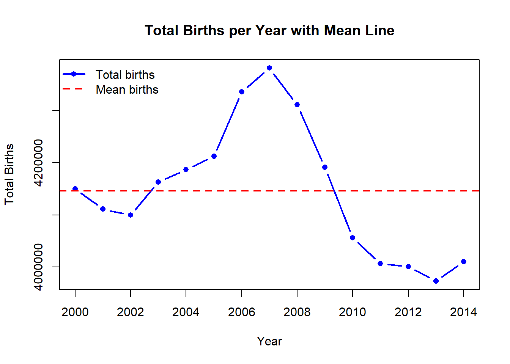
# Visualize UN rates
mean_UN <- mean(GP_data$UE.rate)
plot(
GP_data$year,
GP_data$UE.rate,
type = "b",
pch = 16,
col = "blue",
lwd = 2,
xlab = "Year",
ylab = "Average UN rate",
main = "Average Unemployment Rates per Year"
)
abline(
h = mean_UN,
col = "red",
lwd = 2,
lty = 2
)
legend(
"topleft",
legend = c("Average UN rates", "Mean UN rate"),
col = c("blue", "red"),
lwd = c(2, 2),
lty = c(1, 2),
pch = c(16, NA),
bty = "n"
)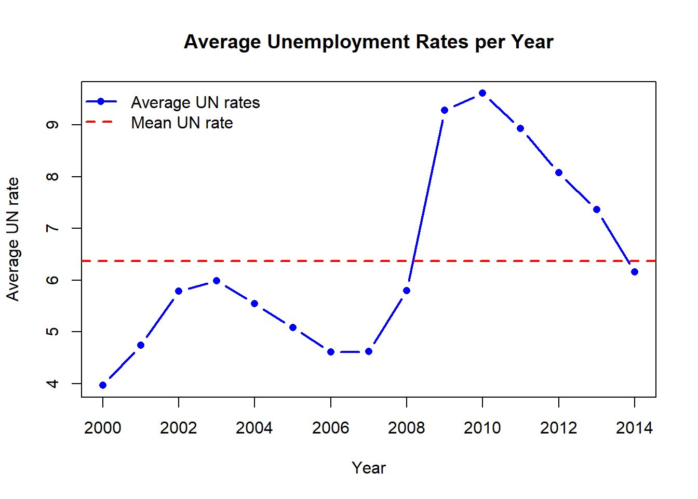
# Visualize Median Household income
mean_MH <- mean(GP_data$MH.income)
plot(
GP_data$year,
GP_data$MH.income,
type = "b",
pch = 16,
col = "blue",
lwd = 2,
xlab = "Year",
ylab = "Median Household Income",
main = "Median Household Income per Year"
)
abline(
h = mean_MH,
col = "red",
lwd = 2,
lty = 2
)
legend(
"topleft",
legend = c("Median Household Income", "Mean MH"),
col = c("blue", "red"),
lwd = c(2, 2),
lty = c(1, 2),
pch = c(16, NA),
bty = "n"
)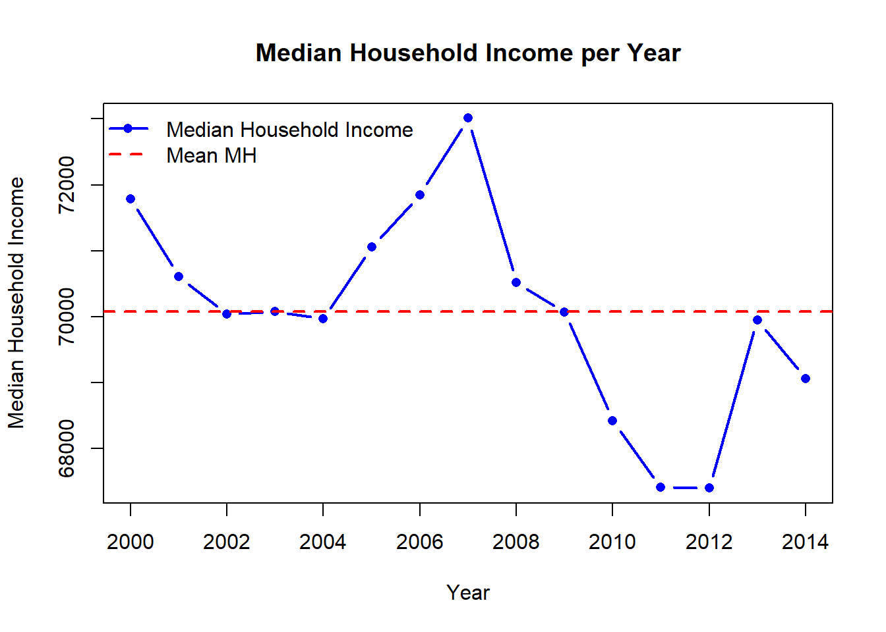
Fit GP model
#### Prepare data for models ####
# Ensure numeric columns
GP_data$year <- as.numeric(GP_data$year)
GP_data$births <- as.numeric(GP_data$births)
GP_data$UE.rate <- as.numeric(GP_data$UE.rate)
GP_data$MH.income <- as.numeric(GP_data$MH.income)
# Scale births for numeric stability
GP_data$births_scaled <- as.numeric(scale(GP_data$births))
GP_data$year_scaled <- as.numeric(scale(GP_data$year))
GP_data$UE_scaled <- as.numeric(scale(GP_data$UE.rate))
GP_data$MH_scaled <- as.numeric(scale(GP_data$MH.income))
#### Check for colinearity ####
corDF <- data.frame(UE_rate = GP_data$UE.rate, MH_income = GP_data$MH.income, Year = GP_data$year)
cor(corDF)## UE_rate MH_income Year
## UE_rate 1.0000000 -0.7800011 0.6613735
## MH_income -0.7800011 1.0000000 -0.5610042
## Year 0.6613735 -0.5610042 1.0000000#### Set priors for model ####
# See what brms would give
get_prior(births_scaled ~ gp(year_scaled + MH_scaled),
data = GP_data, family = gaussian())## prior class coef group resp
## student_t(3, 0, 2.5) Intercept
## (flat) lscale
## inv_gamma(1.494197, 0.056607) lscale gpyear_scaledPMH_scaled
## student_t(3, 0, 2.5) sdgp
## student_t(3, 0, 2.5) sdgp gpyear_scaledPMH_scaled
## student_t(3, 0, 2.5) sigma
## dpar nlpar lb ub tag source
## default
## 0 default
## 0 default
## 0 default
## 0 (vectorized)
## 0 default# How to set your own priors
priors <- c(
prior(normal(0, 5), class = "sdgp"), # marginal SD of GP
prior(exponential(1), class = "lscale"), # length-scale
prior(exponential(1), class = "sigma"),
prior(normal(0, 10), class = "Intercept")
)
#### Specify the different models
# Gaussian Process Model
GP_model <- brm(
births_scaled ~ gp(year_scaled, MH_scaled), #cov = exp_quad,
data = GP_data,
family = gaussian(),
#prior = priors,
chains = 4,
cores = 4,
iter = 2000
)## Compiling Stan program...## Start sampling## Warning: There were 301 divergent transitions after warmup. See
## https://mc-stan.org/misc/warnings.html#divergent-transitions-after-warmup
## to find out why this is a problem and how to eliminate them.## Warning: Examine the pairs() plot to diagnose sampling problems## Warning: The largest R-hat is 1.05, indicating chains have not mixed.
## Running the chains for more iterations may help. See
## https://mc-stan.org/misc/warnings.html#r-hat## Warning: Bulk Effective Samples Size (ESS) is too low, indicating posterior means and medians may be unreliable.
## Running the chains for more iterations may help. See
## https://mc-stan.org/misc/warnings.html#bulk-ess## Warning: Tail Effective Samples Size (ESS) is too low, indicating posterior variances and tail quantiles may be unreliable.
## Running the chains for more iterations may help. See
## https://mc-stan.org/misc/warnings.html#tail-ess# Bayesian GLM model
BRMS_glm <- brm(
births_scaled ~ year_scaled + MH_scaled,
data = GP_data,
family = gaussian(),
chains = 4,
cores = 4,
iter = 2000
)## Compiling Stan program...
## Start sampling# GAM with splines
BRMS_gam <- brm(
births_scaled ~ s(year_scaled) + s(MH_scaled),
data = GP_data,
family = gaussian(),
chains = 4,
cores = 4,
iter = 2000
)## Compiling Stan program...
## Start sampling## Warning: There were 216 divergent transitions after warmup. See
## https://mc-stan.org/misc/warnings.html#divergent-transitions-after-warmup
## to find out why this is a problem and how to eliminate them.## Warning: Examine the pairs() plot to diagnose sampling problems## Warning: Bulk Effective Samples Size (ESS) is too low, indicating posterior means and medians may be unreliable.
## Running the chains for more iterations may help. See
## https://mc-stan.org/misc/warnings.html#bulk-ess## Warning: Tail Effective Samples Size (ESS) is too low, indicating posterior variances and tail quantiles may be unreliable.
## Running the chains for more iterations may help. See
## https://mc-stan.org/misc/warnings.html#tail-ess#### Loo Model Comparison ####
# Get loo scores
loo_gp <- loo(GP_model)## Warning: Found 6 observations with a pareto_k > 0.7 in model 'GP_model'. We
## recommend to set 'moment_match = TRUE' in order to perform moment matching for
## problematic observations.loo_glm <- loo(BRMS_glm)## Warning: Found 1 observations with a pareto_k > 0.7 in model 'BRMS_glm'. We
## recommend to set 'moment_match = TRUE' in order to perform moment matching for
## problematic observations.loo_gam <- loo(BRMS_gam)## Warning: Found 5 observations with a pareto_k > 0.7 in model 'BRMS_gam'. We
## recommend to set 'moment_match = TRUE' in order to perform moment matching for
## problematic observations.# Loo table
print(loo_compare(loo_gp, loo_glm, loo_gam))## elpd_diff se_diff
## GP_model 0.0 0.0
## BRMS_gam -0.4 1.3
## BRMS_glm -8.5 1.8#### Model summaries ####
summary(GP_model)## Warning: Parts of the model have not converged (some Rhats are > 1.05). Be
## careful when analysing the results! We recommend running more iterations and/or
## setting stronger priors.## Warning: There were 301 divergent transitions after warmup. Increasing
## adapt_delta above 0.8 may help. See
## http://mc-stan.org/misc/warnings.html#divergent-transitions-after-warmup## Family: gaussian
## Links: mu = identity
## Formula: births_scaled ~ gp(year_scaled, MH_scaled)
## Data: GP_data (Number of observations: 15)
## Draws: 4 chains, each with iter = 2000; warmup = 1000; thin = 1;
## total post-warmup draws = 4000
##
## Gaussian Process Hyperparameters:
## Estimate Est.Error l-95% CI u-95% CI Rhat
## sdgp(gpyear_scaledMH_scaled) 1.32 0.58 0.69 2.83 1.03
## lscale(gpyear_scaledMH_scaled) 0.29 0.13 0.14 0.61 1.04
## Bulk_ESS Tail_ESS
## sdgp(gpyear_scaledMH_scaled) 96 682
## lscale(gpyear_scaledMH_scaled) 81 38
##
## Regression Coefficients:
## Estimate Est.Error l-95% CI u-95% CI Rhat Bulk_ESS Tail_ESS
## Intercept -0.18 0.81 -2.13 1.23 1.03 771 362
##
## Further Distributional Parameters:
## Estimate Est.Error l-95% CI u-95% CI Rhat Bulk_ESS Tail_ESS
## sigma 0.31 0.15 0.08 0.68 1.05 62 12
##
## Draws were sampled using sampling(NUTS). For each parameter, Bulk_ESS
## and Tail_ESS are effective sample size measures, and Rhat is the potential
## scale reduction factor on split chains (at convergence, Rhat = 1).summary(BRMS_glm)## Family: gaussian
## Links: mu = identity
## Formula: births_scaled ~ year_scaled + MH_scaled
## Data: GP_data (Number of observations: 15)
## Draws: 4 chains, each with iter = 2000; warmup = 1000; thin = 1;
## total post-warmup draws = 4000
##
## Regression Coefficients:
## Estimate Est.Error l-95% CI u-95% CI Rhat Bulk_ESS Tail_ESS
## Intercept -0.00 0.19 -0.39 0.36 1.00 3272 2205
## year_scaled 0.03 0.23 -0.43 0.47 1.00 2711 2716
## MH_scaled 0.81 0.23 0.34 1.28 1.00 2639 2378
##
## Further Distributional Parameters:
## Estimate Est.Error l-95% CI u-95% CI Rhat Bulk_ESS Tail_ESS
## sigma 0.72 0.16 0.48 1.13 1.00 2835 2941
##
## Draws were sampled using sampling(NUTS). For each parameter, Bulk_ESS
## and Tail_ESS are effective sample size measures, and Rhat is the potential
## scale reduction factor on split chains (at convergence, Rhat = 1).summary(BRMS_gam)## Warning: There were 216 divergent transitions after warmup. Increasing
## adapt_delta above 0.8 may help. See
## http://mc-stan.org/misc/warnings.html#divergent-transitions-after-warmup## Family: gaussian
## Links: mu = identity
## Formula: births_scaled ~ s(year_scaled) + s(MH_scaled)
## Data: GP_data (Number of observations: 15)
## Draws: 4 chains, each with iter = 2000; warmup = 1000; thin = 1;
## total post-warmup draws = 4000
##
## Smoothing Spline Hyperparameters:
## Estimate Est.Error l-95% CI u-95% CI Rhat Bulk_ESS Tail_ESS
## sds(syear_scaled_1) 2.72 1.39 0.87 5.97 1.01 608 1288
## sds(sMH_scaled_1) 0.16 0.21 0.00 0.65 1.01 678 819
##
## Regression Coefficients:
## Estimate Est.Error l-95% CI u-95% CI Rhat Bulk_ESS Tail_ESS
## Intercept 0.00 0.09 -0.18 0.20 1.00 2993 2028
## syear_scaled_1 0.58 3.98 -7.14 9.15 1.01 1124 1413
## sMH_scaled_1 0.34 0.36 -0.43 1.04 1.01 417 338
##
## Further Distributional Parameters:
## Estimate Est.Error l-95% CI u-95% CI Rhat Bulk_ESS Tail_ESS
## sigma 0.34 0.12 0.16 0.65 1.01 366 356
##
## Draws were sampled using sampling(NUTS). For each parameter, Bulk_ESS
## and Tail_ESS are effective sample size measures, and Rhat is the potential
## scale reduction factor on split chains (at convergence, Rhat = 1).GP model evaluation
#### Trace plots ####
plot(GP_model)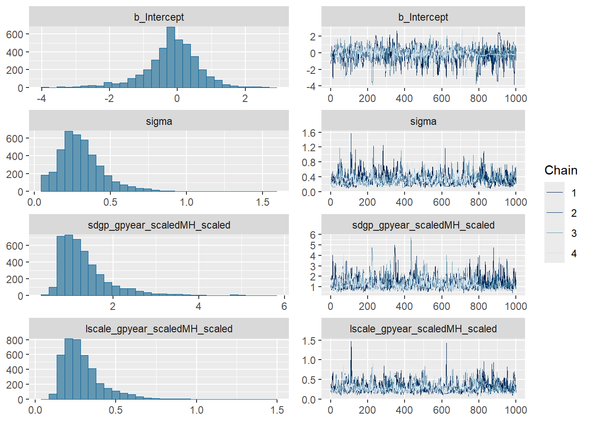
mcmc_plot(GP_model, type = "trace")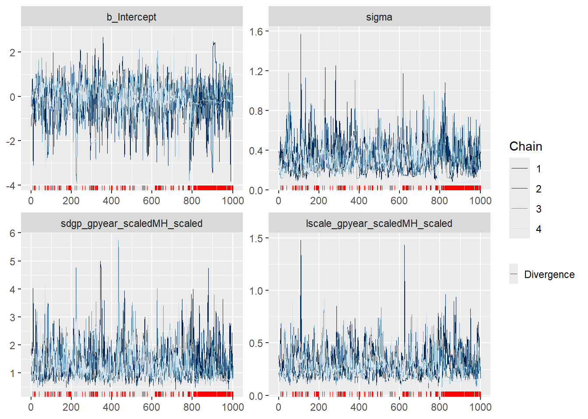
#### Posterior draws ####
pp_check(GP_model, ndraws = 50)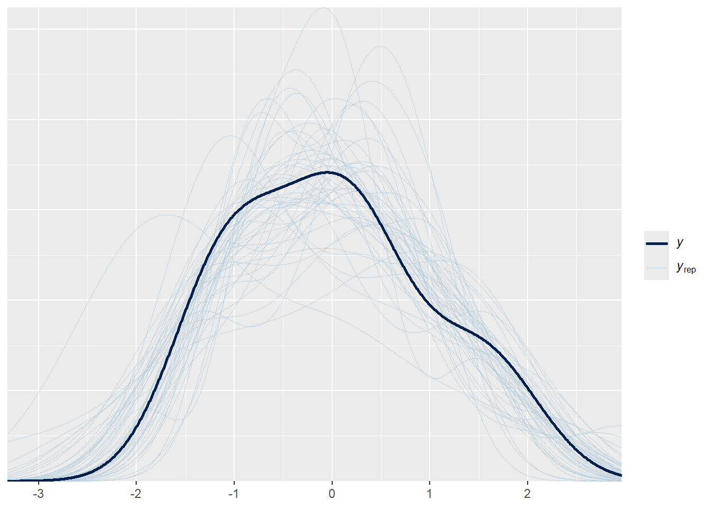
#### Prior predictive check ####
# Fit prior predictive model
prior_mod <- brm(
births_scaled ~ gp(year_scaled, MH_scaled),
data = GP_data,
family = gaussian(),
prior = priors,
sample_prior = "only",
chains = 4,
iter = 2000
)## Warning: The global prior 'exponential(1)' of class 'lscale' will not be used
## in the model as all related coefficients have individual priors already. If you
## did not set those priors yourself, then maybe brms has assigned default priors.
## See ?set_prior and ?default_prior for more details.## Compiling Stan program...## Start sampling##
## SAMPLING FOR MODEL 'anon_model' NOW (CHAIN 1).
## Chain 1:
## Chain 1: Gradient evaluation took 6e-05 seconds
## Chain 1: 1000 transitions using 10 leapfrog steps per transition would take 0.6 seconds.
## Chain 1: Adjust your expectations accordingly!
## Chain 1:
## Chain 1:
## Chain 1: Iteration: 1 / 2000 [ 0%] (Warmup)
## Chain 1: Iteration: 200 / 2000 [ 10%] (Warmup)
## Chain 1: Iteration: 400 / 2000 [ 20%] (Warmup)
## Chain 1: Iteration: 600 / 2000 [ 30%] (Warmup)
## Chain 1: Iteration: 800 / 2000 [ 40%] (Warmup)
## Chain 1: Iteration: 1000 / 2000 [ 50%] (Warmup)
## Chain 1: Iteration: 1001 / 2000 [ 50%] (Sampling)
## Chain 1: Iteration: 1200 / 2000 [ 60%] (Sampling)
## Chain 1: Iteration: 1400 / 2000 [ 70%] (Sampling)
## Chain 1: Iteration: 1600 / 2000 [ 80%] (Sampling)
## Chain 1: Iteration: 1800 / 2000 [ 90%] (Sampling)
## Chain 1: Iteration: 2000 / 2000 [100%] (Sampling)
## Chain 1:
## Chain 1: Elapsed Time: 0.095 seconds (Warm-up)
## Chain 1: 0.077 seconds (Sampling)
## Chain 1: 0.172 seconds (Total)
## Chain 1:
##
## SAMPLING FOR MODEL 'anon_model' NOW (CHAIN 2).
## Chain 2:
## Chain 2: Gradient evaluation took 1.1e-05 seconds
## Chain 2: 1000 transitions using 10 leapfrog steps per transition would take 0.11 seconds.
## Chain 2: Adjust your expectations accordingly!
## Chain 2:
## Chain 2:
## Chain 2: Iteration: 1 / 2000 [ 0%] (Warmup)
## Chain 2: Iteration: 200 / 2000 [ 10%] (Warmup)
## Chain 2: Iteration: 400 / 2000 [ 20%] (Warmup)
## Chain 2: Iteration: 600 / 2000 [ 30%] (Warmup)
## Chain 2: Iteration: 800 / 2000 [ 40%] (Warmup)
## Chain 2: Iteration: 1000 / 2000 [ 50%] (Warmup)
## Chain 2: Iteration: 1001 / 2000 [ 50%] (Sampling)
## Chain 2: Iteration: 1200 / 2000 [ 60%] (Sampling)
## Chain 2: Iteration: 1400 / 2000 [ 70%] (Sampling)
## Chain 2: Iteration: 1600 / 2000 [ 80%] (Sampling)
## Chain 2: Iteration: 1800 / 2000 [ 90%] (Sampling)
## Chain 2: Iteration: 2000 / 2000 [100%] (Sampling)
## Chain 2:
## Chain 2: Elapsed Time: 0.042 seconds (Warm-up)
## Chain 2: 0.059 seconds (Sampling)
## Chain 2: 0.101 seconds (Total)
## Chain 2:
##
## SAMPLING FOR MODEL 'anon_model' NOW (CHAIN 3).
## Chain 3:
## Chain 3: Gradient evaluation took 4e-06 seconds
## Chain 3: 1000 transitions using 10 leapfrog steps per transition would take 0.04 seconds.
## Chain 3: Adjust your expectations accordingly!
## Chain 3:
## Chain 3:
## Chain 3: Iteration: 1 / 2000 [ 0%] (Warmup)
## Chain 3: Iteration: 200 / 2000 [ 10%] (Warmup)
## Chain 3: Iteration: 400 / 2000 [ 20%] (Warmup)
## Chain 3: Iteration: 600 / 2000 [ 30%] (Warmup)
## Chain 3: Iteration: 800 / 2000 [ 40%] (Warmup)
## Chain 3: Iteration: 1000 / 2000 [ 50%] (Warmup)
## Chain 3: Iteration: 1001 / 2000 [ 50%] (Sampling)
## Chain 3: Iteration: 1200 / 2000 [ 60%] (Sampling)
## Chain 3: Iteration: 1400 / 2000 [ 70%] (Sampling)
## Chain 3: Iteration: 1600 / 2000 [ 80%] (Sampling)
## Chain 3: Iteration: 1800 / 2000 [ 90%] (Sampling)
## Chain 3: Iteration: 2000 / 2000 [100%] (Sampling)
## Chain 3:
## Chain 3: Elapsed Time: 0.088 seconds (Warm-up)
## Chain 3: 0.035 seconds (Sampling)
## Chain 3: 0.123 seconds (Total)
## Chain 3:
##
## SAMPLING FOR MODEL 'anon_model' NOW (CHAIN 4).
## Chain 4:
## Chain 4: Gradient evaluation took 3.3e-05 seconds
## Chain 4: 1000 transitions using 10 leapfrog steps per transition would take 0.33 seconds.
## Chain 4: Adjust your expectations accordingly!
## Chain 4:
## Chain 4:
## Chain 4: Iteration: 1 / 2000 [ 0%] (Warmup)
## Chain 4: Iteration: 200 / 2000 [ 10%] (Warmup)
## Chain 4: Iteration: 400 / 2000 [ 20%] (Warmup)
## Chain 4: Iteration: 600 / 2000 [ 30%] (Warmup)
## Chain 4: Iteration: 800 / 2000 [ 40%] (Warmup)
## Chain 4: Iteration: 1000 / 2000 [ 50%] (Warmup)
## Chain 4: Iteration: 1001 / 2000 [ 50%] (Sampling)
## Chain 4: Iteration: 1200 / 2000 [ 60%] (Sampling)
## Chain 4: Iteration: 1400 / 2000 [ 70%] (Sampling)
## Chain 4: Iteration: 1600 / 2000 [ 80%] (Sampling)
## Chain 4: Iteration: 1800 / 2000 [ 90%] (Sampling)
## Chain 4: Iteration: 2000 / 2000 [100%] (Sampling)
## Chain 4:
## Chain 4: Elapsed Time: 0.039 seconds (Warm-up)
## Chain 4: 0.027 seconds (Sampling)
## Chain 4: 0.066 seconds (Total)
## Chain 4:# Prior predictive check
pp_check(prior_mod)## Using 10 posterior draws for ppc type 'dens_overlay' by default.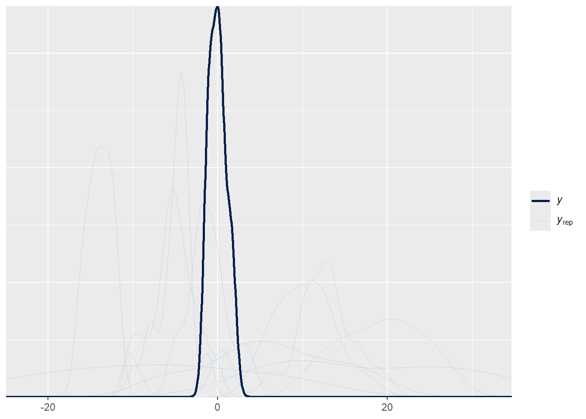
#### Coefficient effect plots and model fit plot ####
conditional_effects(GP_model)## Ignoring unknown labels:
## • fill : "NA"
## • colour : "NA"## Ignoring unknown labels:
## • fill : "NA"
## • colour : "NA"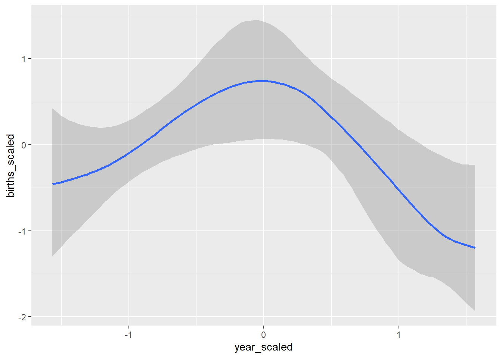
## Ignoring unknown labels:
## • fill : "NA"
## • colour : "NA"
## Ignoring unknown labels:
## • fill : "NA"
## • colour : "NA"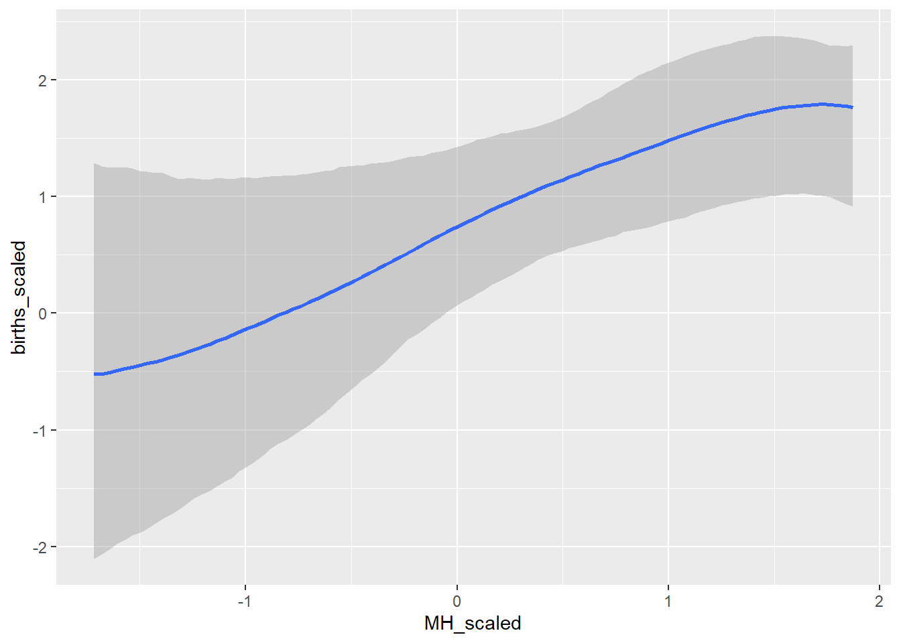
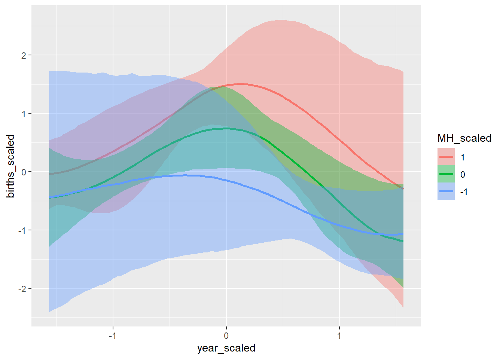
conditional_effects(BRMS_glm)## Ignoring unknown labels:
## • fill : "NA"
## • colour : "NA"
## Ignoring unknown labels:
## • fill : "NA"
## • colour : "NA"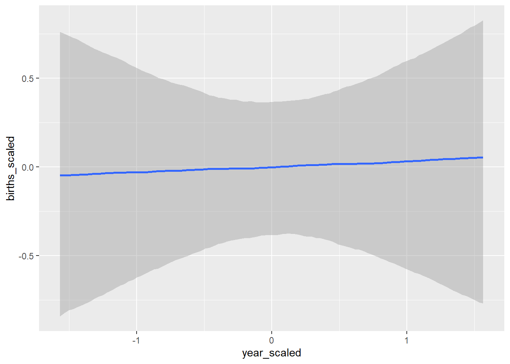
## Ignoring unknown labels:
## • fill : "NA"
## • colour : "NA"
## Ignoring unknown labels:
## • fill : "NA"
## • colour : "NA"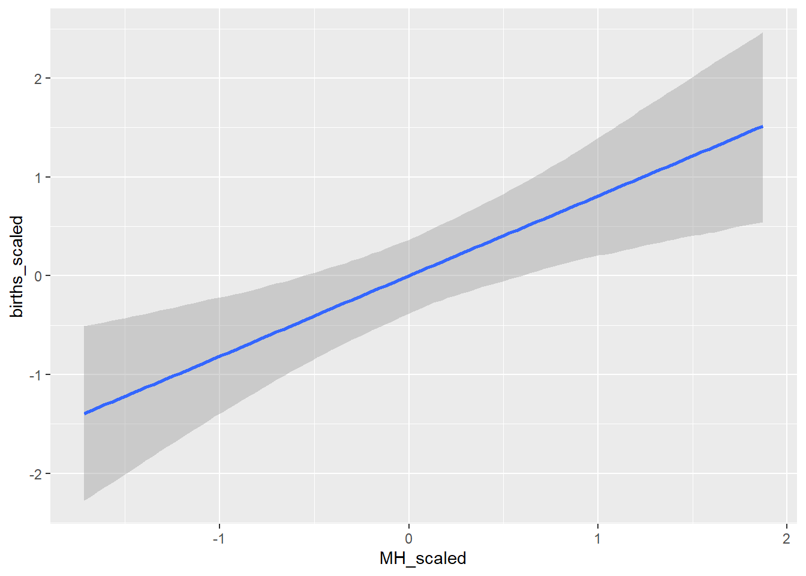
conditional_effects(BRMS_gam)## Ignoring unknown labels:
## • fill : "NA"
## • colour : "NA"
## Ignoring unknown labels:
## • fill : "NA"
## • colour : "NA"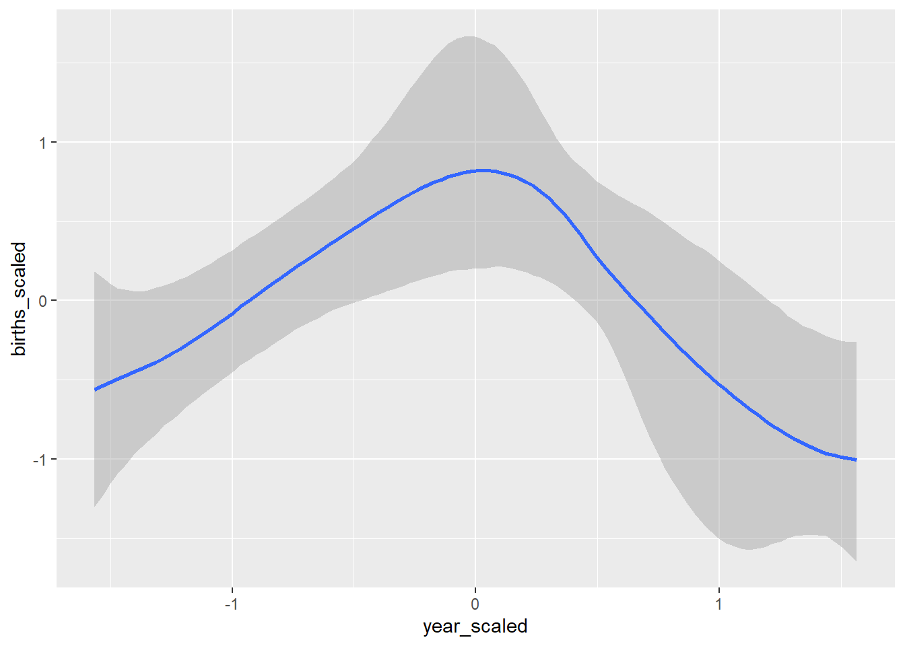
## Ignoring unknown labels:
## • fill : "NA"
## • colour : "NA"
## Ignoring unknown labels:
## • fill : "NA"
## • colour : "NA"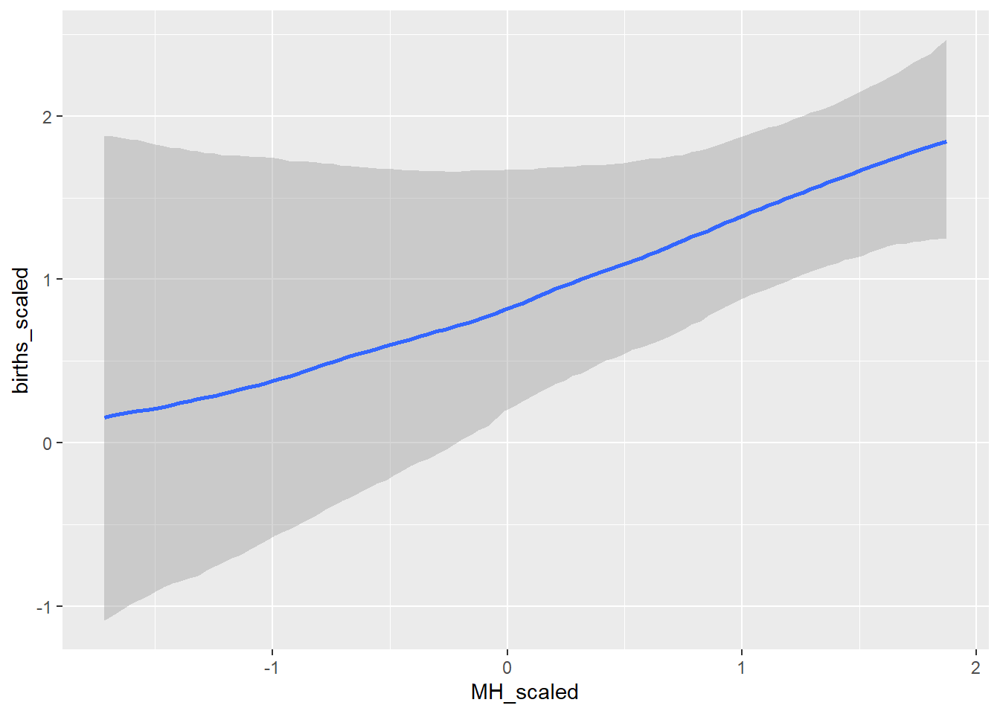
#### Get and look at stan code ####
GP_stan <- stancode(GP_model)
GP_stan## // generated with brms 2.23.0
## functions {
## /* compute a latent Gaussian process with squared exponential kernel
## * Args:
## * x: array of continuous predictor values
## * sdgp: marginal SD parameter
## * lscale: length-scale parameter
## * zgp: vector of independent standard normal variables
## * Returns:
## * a vector to be added to the linear predictor
## */
## vector gp_exp_quad(data array[] vector x, real sdgp, vector lscale, vector zgp) {
## int Dls = rows(lscale);
## int N = size(x);
## matrix[N, N] cov;
## if (Dls == 1) {
## // one dimensional or isotropic GP
## cov = gp_exp_quad_cov(x, sdgp, lscale[1]);
## } else {
## // multi-dimensional non-isotropic GP
## cov = gp_exp_quad_cov(x[, 1], sdgp, lscale[1]);
## for (d in 2:Dls) {
## cov = cov .* gp_exp_quad_cov(x[, d], 1, lscale[d]);
## }
## }
## for (n in 1:N) {
## // deal with numerical non-positive-definiteness
## cov[n, n] += 1e-12;
## }
## return cholesky_decompose(cov) * zgp;
## }
## }
## data {
## int<lower=1> N; // total number of observations
## vector[N] Y; // response variable
## // data related to GPs
## int<lower=1> Kgp_1; // number of sub-GPs (equal to 1 unless 'by' was used)
## int<lower=1> Dgp_1; // GP dimension
## // number of latent GP groups
## int<lower=1> Nsubgp_1;
## // indices of latent GP groups per observation
## array[N] int<lower=1> Jgp_1;
## array[Nsubgp_1] vector[Dgp_1] Xgp_1; // covariates of the GP
## int prior_only; // should the likelihood be ignored?
## }
## transformed data {
## }
## parameters {
## real Intercept; // temporary intercept for centered predictors
## vector<lower=0>[Kgp_1] sdgp_1; // GP standard deviation parameters
## array[Kgp_1] vector<lower=0>[1] lscale_1; // GP length-scale parameters
## vector[Nsubgp_1] zgp_1; // latent variables of the GP
## real<lower=0> sigma; // dispersion parameter
## }
## transformed parameters {
## // prior contributions to the log posterior
## real lprior = 0;
## lprior += student_t_lpdf(Intercept | 3, 0, 2.5);
## lprior += student_t_lpdf(sdgp_1 | 3, 0, 2.5)
## - 1 * student_t_lccdf(0 | 3, 0, 2.5);
## lprior += inv_gamma_lpdf(lscale_1[1][1] | 3.187705, 0.502302);
## lprior += student_t_lpdf(sigma | 3, 0, 2.5)
## - 1 * student_t_lccdf(0 | 3, 0, 2.5);
## }
## model {
## // likelihood including constants
## if (!prior_only) {
## vector[Nsubgp_1] gp_pred_1 = gp_exp_quad(Xgp_1, sdgp_1[1], lscale_1[1], zgp_1);
## // initialize linear predictor term
## vector[N] mu = rep_vector(0.0, N);
## mu += Intercept + gp_pred_1[Jgp_1];
## target += normal_lpdf(Y | mu, sigma);
## }
## // priors including constants
## target += lprior;
## target += std_normal_lpdf(zgp_1);
## }
## generated quantities {
## // actual population-level intercept
## real b_Intercept = Intercept;
## }# Write out file
#write_stan_file(GP_stan, basename = "GP_stan.stan")Lab Exercise
Try creating some different Gaussian Process models with differing predictors and kernel in BRMS. Valid kernels in this package are: ‘exp_quad’, ‘matern52’, ‘matern32’, ‘exponential’. Feel free to try your own priors or allow the default ones. How does changing the kernel impact the model and why does it have an impact? Is there a difference in the number of parameters you need to put priors on with the change in kernel for the GP models. After creating a couple different GP models, which one performs the best (loo score, diagnostics, etc)?